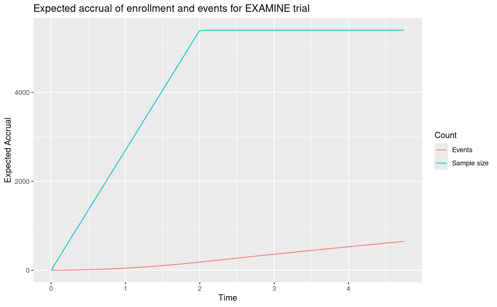
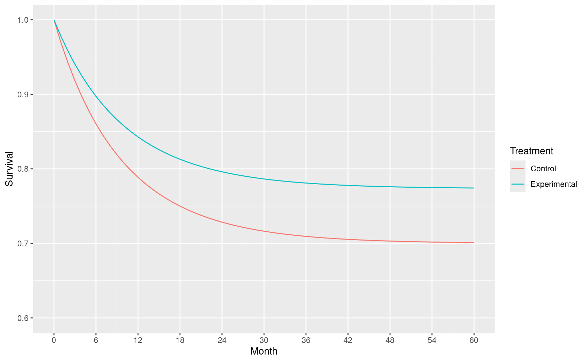
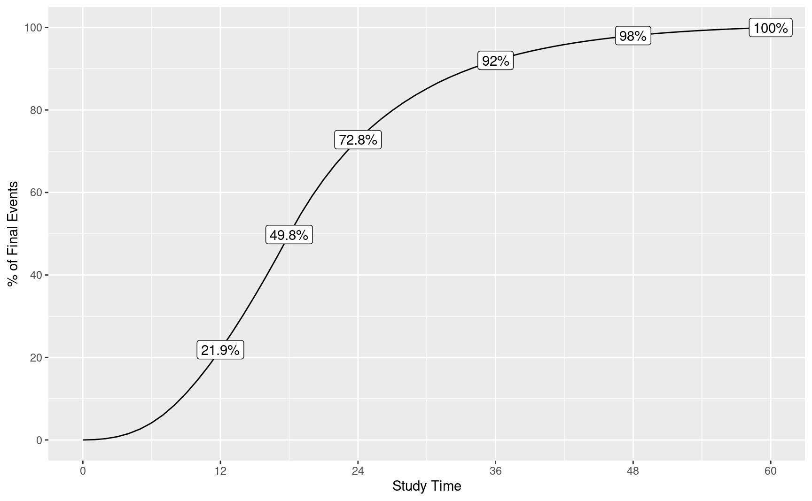

2 Proportional hazards
We consider designs under the assumption of proportional hazards in this chapter applying the gsDesign package. These will be most easily be developed using the gsDesign Shiny app at https://rinpharma.shinyapps.io/gsdesign/. We have saved designs that can be re-loaded into the app in the book website at https://github.com/keaven/gsd-deming; if you copy the repository to your local PC, you will be able to easily access these designs.
After a brief review of methodology, we recreate designs and evaluate final inference for multiple published trials:
- We begin with the KEYNOTE-189 trial (Gandhi et al. 2018) to show a straightforward, common application in metastatic (high-risk) cancer.
- We proceed to the AFCAPS/TexCAPS trial (Downs et al. 1997, 1998), a cardiovascular endpoint trial with much lower risk than a metastatic oncology trial.
- Next, we look at the EXAMINE trial (White et al. 2013), a trial in diabetic patients evaluating a non-inferiority hypothesis for cardiovascular outcomes.
We also create a design for a hypothetical trial in oncology where a long-term plateau in endpoints is likely. We approach this with a proportional hazards cure model. We also demonstrate the use of calendar-based spending for this example.
2.1 Lachin and Foulkes method
The gsDesign R package focuses on sample size and power derivation primarily on the method of Lachin and Foulkes (Lachin and Foulkes 1986). This allows simple specification of piecewise constant enrollment, failure rates and dropout rates which can approximate general distributions for each. While the sample size implementation focuses primarily on increasing enrollment rate to achieve power within a targeted trial duration, there is also an option to fix a maximum enrollment rate and extend follow-up until power is achieved as in Kim and Tsiatis (1990); this method will not always work without some adjustment in assumptions. The methods all focus on 2-arm trials with a constant treatment effect over time (proportional hazards). It is assumed that a (stratified) logrank test or Wald test with a Cox model coefficient are used for statistical testing. The number of events drives power, regardless of study duration, as noted by Schoenfeld (1981); that approximation for event requirements is provided in the nSurv() function for fixed design and gsSurv() for group sequential design as can be seen by code generated in the app or in gsDesign package documentation.
One place where we deviate from the Lachin and Foulkes method is when we approximate the hazard ratio at study bounds. This should always be considered an approximation that is informative to those reviewing the design rather than a requirement to cross a bound. In any case, the approximation is that of Schoenfeld (1981), which is quite simple and implemented in the function gsDesign::gsHR().
2.2 Metastatic oncology example
The KEYNOTE-189 trial (Gandhi et al. (2018)) evaluated progression-free survival (PFS) and overall survival (OS) in patients with previously untreated metastatic non-small cell lung cancer (NSCLC). Patients were all treated with chemotherapy and randomized 2:1 to an add-on of pembrolizumab or placebo. The most important finding was: After a median follow-up of 10.5 months, the estimated rate of overall survival at 12 months was 69.2% (95% confidence interval [CI], 64.1 to 73.8) in the pembrolizumab-combination group versus 49.4% (95% CI, 42.1 to 56.2) in the placebo-combination group (hazard ratio for death, 0.49; 95% CI, 0.38 to 0.64; P<0.001) (Gandhi et al. 2018).
The design allocated 0.025 family-wise error rate (FWER, also referred to as 1-sided Type I error) between PFS (\(\alpha=0.095\)) and OS (\(\alpha=0.015\)). The graphical method \(\alpha\)-control for group sequential design of Maurer and Bretz (2013) was used to control Type I error. We further review the design for OS here but do not attempt to exactly reproduce all details. Key aspects of the design as documented in the protocol accompanying Gandhi et al. (2018) were:
- \(\alpha=0.0155\).
- Control group survival follows an exponential distribution with a median of 13 months.
- Exponential dropout rate of 0.1% per month.
- 90% power to detect a hazard ratio of 0.7.
- 2:1 randomization, experimental:control.
- Enrollment over 1 year; while not specified in the protocol, we have further assumed.
- Trial duration of approximately 35 months.
- Observed deaths of 240, 332, and 416 at the 3 planned analyses; this yields information fractions of 0.5769231 and 0.7980769 at the interim analyses.
- A one-sided bound using the Lan and DeMets (1983) spending function approximating an O’Brien-Fleming bound.
We adjusted the exponential dropout rate to 0.133% per month and hazard ratio to 0.70025 in the following so that both targeted events and targeted sample size would be close to integers. This sort of adjustment can limit any confusion over the computation of interim bounds, as will be demonstrated.
The design is derived as:
KEYNOTE189design <- gsSurv(
# Number of analyses
k = 3,
# One-sided design
test.type = 1,
# 1-sided Type I error
alpha = 0.0155,
# Type II error (1 - targeted power)
beta = 0.1,
# Timing (information fraction) at interim analyses
timing = c(0.5769231, 0.7980769),
# Efficacy bound spending function (no spending parameter needed)
sfu = sfLDOF,
# Control group exponential failure rate to get median OS of 13 months
lambdaC = log(2) / 13,
# Alternate hypothesis hazard ratio
hr = 0.70025,
# Dropout rate (exponential rate)
eta = 0.00133,
# Enrollment rates during ramp-up period
gamma = c(2.5, 5, 7.5, 10),
# Relative enrollment rate time period durations
R = c(2, 2, 2, 6),
# Calendar time of final analysis
T = 35,
# Minimum follow-up time after enrollment complete
minfup = 23,
# Randomization ratio (experimental/placebo)
ratio = 2
)
KEYNOTE189design %>%
gsBoundSummary(ratio = 2, digits = 5, ddigits = 2, tdigits = 1, timename = "Month") %>%
gt() %>%
tab_header(title = "KEYNOTE189 OS design")| KEYNOTE189 OS design | ||
|---|---|---|
| Analysis | Value | Efficacy |
| IA 1: 58% | Z | 2.98048 |
| N: 617 | p (1-sided) | 0.00144 |
| Events: 240 | ~HR at bound | 0.66490 |
| Month: 19.2 | P(Cross) if HR=1 | 0.00144 |
| P(Cross) if HR=0.7 | 0.36500 | |
| IA 2: 80% | Z | 2.49564 |
| N: 617 | p (1-sided) | 0.00629 |
| Events: 332 | ~HR at bound | 0.74785 |
| Month: 26.1 | P(Cross) if HR=1 | 0.00674 |
| P(Cross) if HR=0.7 | 0.73080 | |
| Final | Z | 2.21487 |
| N: 617 | p (1-sided) | 0.01338 |
| Events: 416 | ~HR at bound | 0.79425 |
| Month: 35 | P(Cross) if HR=1 | 0.01550 |
| P(Cross) if HR=0.7 | 0.90000 | |
We further describe the information in this table as follows:
- The IA percent is the percent of statistical information (planned events) at the interim analysis relative to the final analysis. This matches the timing input.
- We note that while sample size (N) and events are rounded up in the table, the design stores continuous values for these numbers to exactly match the input timing of analyses. Thus, calculating with rounded up numbers in the table may not exactly match the IA % in the table.
- The calendar timing of the analysis is the expected timing relative to opening of enrollment.
- Z-values are for standard normal test statistics with positive values representing a treatment benefit for the experimental group.
- \(p\)-values are nominal \(p\)-values corresponding to the Z-values.
- ~HR at bound is an asymptotic approximation for the hazard ratio required to cross a bound. This is not a criterion that must be met for Type I error control.
- P(Cross) if HR=1 is the cumulative probability of crossing a bound (efficacy or futility) at or before a given analysis. We note that for the default non-binding Type I error option that P(Cross) if HR=1 will be less than the specified Type I error. This is because Type I error is computed ignoring the futility bound since it is advisory only. The actual cumulative Type I error spending is 0.001439, 0.00674, 0.0155.
- P(Cross) if HR =0.7 is the cumulative probability of crossing a bound under the alternate hypothesis.
The design is updated at the interim analysis with 235 deaths as follows. The code can be written by the app for you, this is provided only if you wish to dive into details. We note that the function gsDesign() is used for the update while gsSurv() was used for the original design. The gsSurv() function is useful to approximate calendar timing of event accrual, something that is no longer needed at the time of interim analysis. Note that the gsBoundSummary() call below is specifically state treatment differences in the table on the hazard ratio scale as well as to interpret the event count as the key to calculating information fraction at the analysis.
x <- KEYNOTE189design
xu <- gsDesign(
# First 3 parameters are all updated
k = x$k, # This must be at least 2
n.I = c(235, ceiling(x$n.I[2:3])), # Enter integers for actual events
# This parameter sets spending (information) fraction as
# planned final event count from the original trial design
maxn.IPlan = x$n.I[x$k],
# REMAINING PARAMETERS COPIED FROM ORIGINAL DESIGN
test.type = x$test.type, alpha = x$alpha, beta = x$beta,
astar = x$astar, sfu = x$upper$sf, sfupar = x$upper$param,
sfl = x$lower$sf, sflpar = x$lower$param,
delta = x$delta, delta1 = x$delta1, delta0 = x$delta0
)
# Now we summarize bounds in a table
xu %>%
gsBoundSummary(
deltaname = "HR", # Name of treatment difference measure
logdelta = TRUE, # For survival, delta is on a log scale; this transforms
Nname = "Events", # "N" for analyses is events for survival analysis
digits = 5, # Decimals for numbers in body of table
ddigits = 2, # Decimals for natural parameter; HR in this case
tdigits = 1, # Time digits (not needed here)
# We select key parameters for printing
exclude = c(
"B-value", "CP", "CP H1", "PP",
paste0("P(Cross) if HR=", round(c(x$hr0, x$hr), digits = 2))
)
) %>%
gt() %>%
tab_header(
title = "Updated bounds for interim analysis",
subtitle = "KEYNOTE-189 trial"
)| Updated bounds for interim analysis | ||
|---|---|---|
| KEYNOTE-189 trial | ||
| Analysis | Value | Efficacy |
| IA 1: 56% | Z | 3.01615 |
| Events: 235 | p (1-sided) | 0.00128 |
| ~HR at bound | 0.67469 | |
| Spending | 0.00128 | |
| IA 2: 80% | Z | 2.49300 |
| Events: 332 | p (1-sided) | 0.00633 |
| ~HR at bound | 0.76060 | |
| Spending | 0.00546 | |
| Final | Z | 2.21461 |
| Events: 416 | p (1-sided) | 0.01339 |
| ~HR at bound | 0.80480 | |
| Spending | 0.00876 | |
The \(p\)-value reported at interim 1 was <0.001 (Gandhi et al. 2018), establishing statistical significance relative to the bound of 0.00128 in the summary table above as well as in the publication.
2.3 Cardiovascular outcomes reduction
The AFCAPS/TexCAPS trial evaluated the use of lovastatin to reduce cardiovascular outcomes. The design was described in Downs et al. (1997) while results were reported in Downs et al. (1998). We approximate the design and evaluation of statistical significance here. Software and some assumptions of the model were not completely clear, so this is not an exact reproduction of the design, but is very close. Key assumptions we replicate here:
- 5 years minimum follow-up of all patients enrolled.
- Interim analyses after 0.375 and 0.75 of final planned event count has accrued.
- 2-sided bound using the Hwang, Shih, and De Cani (1990) spending function with parameter \(\gamma = -4\) to approximate an O’Brien-Fleming bound.
- We arbitrarily set the following parameters to match the design:
- Power of 90% for a hazard ratio of 0.6921846; this is slightly different than the 0.7 hazard ratio suggested in Downs et al. (1997) due to the use of the Lachin and Foulkes (1986) method used in
gsSurv()routine below. - Enrollment duration of 1/2 year with constant enrollment.
- An exponential failure rate of 0.01131 per year which is nearly identical to the annual dropout rate of 0.01125.
- An exponential dropout rate of 0.004 per year which is nearly identical to the annual dropout rate of 0.00399.
- Power of 90% for a hazard ratio of 0.6921846; this is slightly different than the 0.7 hazard ratio suggested in Downs et al. (1997) due to the use of the Lachin and Foulkes (1986) method used in
The design has been saved and can be reloaded from the gsDesign Shiny app from the book website in the data directory from the file AFCAPSDesign.rds. We provide code generated there for the design. This begins with loading the gsDesign package and setting parameters for the design with associated comments to help explain; default comments have been updated here. More parameters than needed are given than sometimes needed when code is generated by the app. Comments indicate where this is the case. Code and comments are largely copied from the app, so this may help the reader interpret what they see there.
# Number of analyses
k <- 3
# See gsDesign() help for description of boundary types
test.type <- 2 # This indicates a 2-sided design
# 1-sided Type I error
alpha <- 0.025
# Type II error (1 - targeted power)
beta <- 0.1
# If test.type = 5 or 6, this sets maximum spending for futility
# under the null hypothesis. Otherwise, this is ignored.
# (astar did not need to be specified in this case)
astar <- 0
# Timing (information fraction) at interim analyses
timing <- c(0.375, 0.75)
# Efficacy bound spending function
sfu <- sfHSD
# Upper bound spending function parameters, if any
sfupar <- -4
# NOTE THAT THE NEXT 2 PARAMETERS ARE NOT NEEDED AS THE
# LOWER BOUND WAS SPECIFIED IN sfu and sfupar SINCE test.type=2 was specified.
# Lower bound spending function, if used (test.type > 2)
sfl <- sfLDOF
# Lower bound spending function parameters, if any
sflpar <- c(0)
# Assumed hazard ratio under alternate hypothesis
hr <- 0.6921846
# Null hypothesis hazard ratio (this is a default; for superiority trials)
hr0 <- 1
# Dropout rate (exponential rate)
eta <- 0.004
# Enrollment rate (will be inflated by gsSurv to achieve power)
gamma <- 10
# Relative enrollment rates by time period
R <- 0.5
# Interval durations for piecewise failure rates
# not needed since there is only 1 rate;
# last interval always extends indefinitely (to infininity),
# so it does not need to be specified
S <- NULL
# Calendar time of final analysis
T <- 5.5
# Minimum follow-up time after enrollment complete
minfup <- 5
# Relative enrollment (experimental/placebo)
ratio <- 1
# This gets the single control group failure rate
# (complicated by the fact that the app has to allow piecewise rates)
obs <- matrix(c(100, 0.01131), ncol = 2)
obs <- obs[(!is.na(obs[, 1])) & (!is.na(obs[, 2])), 2]
lambdaC <- obsNow we plug the above parameters into gsSurv() to generate the design. See comments above for interpretation of the parameters.
x <- gsSurv(
k = k, test.type = test.type, alpha = alpha, beta = beta,
astar = astar, timing = timing, sfu = sfu, sfupar = sfupar, sfl = sfl,
sflpar = sflpar, lambdaC = lambdaC, hr = hr, hr0 = hr0, eta = eta,
gamma = gamma, R = R, S = S, T = T, minfup = minfup, ratio = ratio
)The reader can see summaries of the above with the following commands which we do not run here:
summary(x) # Textual summary of design
gsBoundSummary(x) # Tabular summary of designAll details are available through the list of items returned; see the help file or try names(x) to see what is available. As examples, we look at the number of events and nominal \(p\)-value bounds for the design. Note that the events planned are continuous numbers rather than integers. Parameters have been chosen for the design so that these are very close to but less than whole numbers. This is not required, but can limit misinterpretations.
x$n.I # Events at planned analyses
#> [1] 119.9993 239.9986 319.9981Here are the nominal 1-sided \(p\)-value bounds which could also be seen with the gsBoundSummary(x) command above.
pnorm(-x$upper$bound)
#> [1] 0.001623978 0.007976344 0.022198916Doubling these 1-sided bounds, we can compare to bounds from Downs et al. (1997): The group sequential boundary (2-sided, \(\alpha = 0.05\)) for the scheduled analyses is 2.947, 2.411, and 2.011, which correspond to \(p\)-values of 0.0032, 0.0159, and 0.0443, respectively. We see the results are nearly identical.
From Downs et al. (1998), we have *After an average follow-up of 5.2 years, lovastatin reduced the incidence of first acute major coronary events (183 vs 116 first events; relative risk [RR], 0.63; 95% confidence interval [CI], 0.50-0.79; P<.001).` This was at the second interim analysis. We see immediately that the 299 events were less than the second planned analysis after 332 events. The bounds are easily adapted in the app. We provide the code generated with the design update provided by the app. We assumed the first interim was performed with the planned 240 events. First, we enter the updated event counts.
Based on the above we can update the design. Note that we are now using gsDesign() rather than gsSurv() as calendar time is no longer relevant.
xu <- gsDesign(
# Updated parameters
k = ku, # Number of analyses
n.I = n.I, # Number of events
# Spending time; you don't really need this if you are just using
# information (event) fraction
usTime = usTime,
lsTime = lsTime,
# Remaining parameters from original design
test.type = x$test.type, alpha = x$alpha, beta = x$beta,
astar = x$astar, sfu = x$upper$sf, sfupar = x$upper$param,
sfl = x$lower$sf, sflpar = x$lower$param,
# maxn.IPlan is key for update to set max planned information
maxn.IPlan = x$n.I[x$k],
delta = x$delta, delta1 = x$delta1, delta0 = x$delta0
)To inspect the resulting bounds, we run gsBoundSummary() again. Several parameters are useful to get the desired results, as noted in the comments. We note that either the Z or \(p\)-value bound is what is needed. For analysis 2, the nominal 1-sided bound 0.0183 has clearly been exceeded by the p < 0.001 reported in the manuscript, confirming statistical significance for the trial. Since we did not know the actual events at interim 1 were not reported, the final bound for the trial may have been slightly different. You can see how much this changes by trying different event counts in the updated design specification in the app.
gsBoundSummary(
xu, # Updated design
deltaname = "HR", # Name of treatment difference measure
logdelta = TRUE, # For survival, delta is on a log scale; this transforms
Nname = "Events", # "N" for analyses is events for survival analysis
digits = 4, # Decimals for numbers in body of table
ddigits = 2, # Decimals for natural parameter; HR in this case
tdigits = 1, # Time digits (not needed here)
# We select key parameters for printing
exclude = c(
"B-value", "CP", "CP H1", "PP",
paste0("P(Cross) if HR=", round(c(hr0, hr), digits = 2))
)
) %>%
gt() %>%
tab_header(title = "Updated AFCAPS bounds at IA 2")| Updated AFCAPS bounds at IA 2 | |||
|---|---|---|---|
| Analysis | Value | Efficacy | Futility |
| IA 1: 38% | Z | 2.9432 | -2.9432 |
| Events: 120 | p (1-sided) | 0.0016 | 0.0016 |
| ~HR at bound | 0.5843 | 1.7115 | |
| Spending | 0.0016 | 0.0016 | |
| IA 2: 93% | Z | 2.0908 | -2.0908 |
| Events: 299 | p (1-sided) | 0.0183 | 0.0183 |
| ~HR at bound | 0.7852 | 1.2736 | |
| Spending | 0.0175 | 0.0175 | |
| Final | Z | 2.0451 | -2.0451 |
| Events: 320 | p (1-sided) | 0.0204 | 0.0204 |
| ~HR at bound | 0.7956 | 1.2569 | |
| Spending | 0.0059 | 0.0059 | |
2.4 Cardiovascular outcomes non-inferiority
The EXAMINE trial (White et al. 2013) established non-inferiority for major cardiovascular outcomes (MACE) for the treatment of diabetes using the DPP4 inhibitor alogliptin compared to placebo. The design was described in White et al. (2011). We approximate the design and primary analysis evaluation here. Software and some assumptions of the model were not completely clear, so this is not an exact reproduction of Downs et al. (1997), but is very close. Key assumptions we replicate here:
- The primary analysis evaluates treatment effect using a Cox proportional hazards model of the primary endpoint MACE stratified by geographic region and screening renal function.
- 1-sided repeated confidence interval for HR at each analysis.
- Focus on analysis to rule out HR \(\ge 1.3\), but also a test for superiority.
- Analyses planned after 550, 600, 650 MACE events.
- O’Brien-Fleming-like spending function Lan and DeMets (1983).
- 2.5% Type I error.
- Approximately 91% power.
- 3.5% annual MACE event rate.
- Uniform enrollment over 2 years.
- 4.75 years trial duration.
- 1% annual loss-to-follow-up rate.
- Software: EAST 5 (Cytel).
EXAMINEdesign <- gsSurv(
k = 3, # Number of analyses
test.type = 1, # 1-sided testing
timing = c(550, 600) / 650, # Event fractions at interim analyses
beta = 1 - 0.90658, # Type II error (1 - power)
alpha = .025, # 1-sided Type I error
lambdaC = .035, # Exponential failure rate
eta = .0108, # Exponential dropout rate
sfu = sfLDOF, # O'Brien-Fleming-like spending
hr0 = 1.3, # Non-inferiority margin
hr = 1, # Alternate hypothesis is equal risk
T = 4.75, # Calendar time of final analysis
minfup = 2.75 # Minimum follow-up time after enrollment complete
)
gsBoundSummary(EXAMINEdesign, digits = 4, ddigits = 2, tdigits = 2, timename = "Year") %>%
gt() %>%
tab_header(title = "EXAMINE non-inferiority design bounds")| EXAMINE non-inferiority design bounds | ||
|---|---|---|
| Analysis | Value | Efficacy |
| IA 1: 85% | Z | 2.1748 |
| N: 5400 | p (1-sided) | 0.0148 |
| Events: 550 | ~HR at bound | 1.0799 |
| Year: 4.13 | P(Cross) if HR=1.3 | 0.0148 |
| P(Cross) if HR=1 | 0.8124 | |
| IA 2: 92% | Z | 2.1535 |
| N: 5400 | p (1-sided) | 0.0156 |
| Events: 600 | ~HR at bound | 1.0904 |
| Year: 4.44 | P(Cross) if HR=1.3 | 0.0197 |
| P(Cross) if HR=1 | 0.8654 | |
| Final | Z | 2.0815 |
| N: 5400 | p (1-sided) | 0.0187 |
| Events: 650 | ~HR at bound | 1.1041 |
| Year: 4.75 | P(Cross) if HR=1.3 | 0.0250 |
| P(Cross) if HR=1 | 0.9066 | |
Following is a plot of expected accrual of subjects and events over time under design assumptions for the alternate hypothesis. You may choose to ignore the code until you need to do a plot like this.
accrual_fn <- function(Time, x) {
xx <- nEventsIA(tIA = Time, x = x, simple = FALSE)
data.frame(
Time = Time,
Accrual = c(xx$eNC + xx$eNE, xx$eDC + xx$eDE),
Count = c("Sample size", "Events")
)
}
accrual <- data.frame(Time = 0, Accrual = c(0, 0), Count = c("Sample size", "Events"))
xtime <- (0:50) / 50 * max(EXAMINEdesign$T)
for (i in seq_along(xtime[xtime > 0])) {
accrual <- rbind(accrual, accrual_fn(Time = xtime[i + 1], x = EXAMINEdesign))
}
ggplot(accrual, aes(x = Time, y = Accrual, col = Count)) +
geom_line() +
ylab("Expected Accrual") +
ggtitle("Expected accrual of enrollment and events for EXAMINE trial")
Findings for the trial: the primary end point occurred at similar rates in the alogliptin and placebo groups (in 11.3% and 11.8% of patients, respectively, after a median exposure of 18 months; hazard ratio, 0.96; upper boundary of the one-sided repeated CI, 1.16; P<0.001 for noninferiority (White et al. 2013). This was the first interim for testing the non-inferiority hypothesis to rule out an excess risk with HR=1.3. This analysis was performed with 621 events rather than the planned 550. Such an overrun is not atypical when setting a database cutoff prior to final data cleanup and (blinded) endpoint review. In any case, here is the updated design. We enter the events at the interim analysis for the trial. Since gsDesign() requires at least 2 analyses, we also provide the final analysis planned event count even though that was not needed at the time of the interim analysis and could be updated at the time of the final analysis, if needed.
Now we incorporate this to update the original design. As in previous examples, most of the arguments are copied from the original design and we use gsDesign() to update rather than gsSurv() which was used for the original design.
x <- EXAMINEdesign
xu <- gsDesign(
k = ku,
test.type = test.type,
alpha = x$alpha,
beta = x$beta,
astar = astar,
timing = timing,
sfu = sfu,
sfupar = sfupar,
sfl = sfl,
sflpar = sflpar,
n.I = n.I,
maxn.IPlan = x$n.I[x$k],
delta = x$delta,
delta1 = x$delta1,
delta0 = x$delta0,
usTime = usTime,
lsTime = lsTime
)Next we document the updated bounds. The first code line here is needed for any case where hr0 != 1; i.e. for non-inferiority trials or, in the case of vaccines, super-superiority trials.
# The first line is required to make gsBoundSummary to work correctly
# for non-inferiority and super-superiority trials
xu$hr0 <- EXAMINEdesign$hr0
gsBoundSummary(
xu,
deltaname = "HR",
logdelta = TRUE,
Nname = "Events",
digits = 4,
ddigits = 2,
tdigits = 1,
exclude = c(
"B-value", "CP", "CP H1", "PP"
)
) %>%
gt() %>%
tab_header(
title = "EXAMINE trial design",
subtitle = "Update at time of analysis"
)| EXAMINE trial design | |||
|---|---|---|---|
| Update at time of analysis | |||
| Analysis | Value | Efficacy | Futility |
| IA 1: 96% | Z | 2.0367 | -2.0367 |
| Events: 621 | p (1-sided) | 0.0208 | 0.0208 |
| ~HR at bound | 1.1040 | 1.5309 | |
| Spending | 0.0208 | 0.0208 | |
| P(Cross) if HR=1.3 | 0.0208 | 0.0208 | |
| P(Cross) if HR=1 | 0.8881 | 0.0000 | |
| Final | Z | 2.0389 | -2.0389 |
| Events: 650 | p (1-sided) | 0.0207 | 0.0207 |
| ~HR at bound | 1.1079 | 1.5255 | |
| Spending | 0.0042 | 0.0042 | |
| P(Cross) if HR=1.3 | 0.0250 | 0.0250 | |
| P(Cross) if HR=1 | 0.9111 | 0.0000 | |
2.4.1 Exercise
See the following link for the Moderna COVID-19 design replication: https://medium.com/@yipeng_39244/reverse-engineering-the-statistical-analyses-in-the-moderna-protocol-2c9fd7544326
Can you reproduce this using the Shiny interface?
2.5 Cure model
We consider a Poisson mixture model De Castro, Cancho, and Rodrigues (2010) which has also been referred to as a transformation cure model Zhang and Shao (2018) or promotion time cure model Zeng, Yin, and Ibrahim (2006). This model can be useful to approximate event accrual in a trial where there is a substantial portion of patients who are expected to have good long-term result. Example applications used to estimate long-term survival are provided by in Hellmann et al. (2017) as well as De Castro, Cancho, and Rodrigues (2010). Because of the nature and uncertainty of the event accumulation, we choose to implement with calendar-based spending Lan and DeMets (1989). This is a choice that would need to be carefully evaluated. Part of the suggested rationale is that the trial needs to be completed in a certain timeframe and the event distribution in the range described over the course of the planned survival distribution should be adequate, and the extreme long-term proportional hazards assumption may be less safe than over a shorter window.
Much simpler models such as a 2- or 3-piece piecewise exponential model could be equally effective for a design of this nature, so this is just one example of an approach to a situation of this nature. This is our longest example; a simpler version of this is demonstrated in the app. Readers not immediately interested in the approach can simply skip the rest of this chapter.
2.5.1 Cure model parameters
The basic Poisson mixture cure model we consider takes the form
\[S(t)= \exp(-\theta (1 - \exp(-\lambda t)).\]
We note that:
- \(1-\exp(-\lambda t)\) is the cumulative distribution function for an exponential distribution and can be replaced by an arbitrary continuous cumulative distribution function.
- As \(t\) approaches \(\infty\), \(S(t)\) approaches \(\exp(-\theta)\) which will be referred to as the cure rate.
Generally, this can be useful when historical data for a proposed group suggests a plateau in survival after some time. The parameter \(\lambda\) above can be used to determine how quickly events occur, basically setting the bend in the survival curve. For instance, we assume here that historical data suggests a plateau of 0.7 event-free survival for some indication such as adjuvant or neoadjuvant treatment of some cancer. We assume further that by 18 months, the event-free survival is already 0.75. Using the Poisson mixture cure model above, we can back-calculate the parameters as:
\[\theta = -\log(0.7)\] \[\lambda = -\log(1 + \log(0.75) / \theta) / 18.\]
For a proportional hazards model with hazard ratio \(HR\) we can assume control survival \(S_C(t)=S(t)\) as above and experimental survival of \(S_E(t)=S_C(t)^{HR}\). Assuming \(HR=0.72\) we plot assumed survival through 48 months for each treatment group.
# Assumed long-term survival rate
cureRate <- 0.7
# Survival rate at specific time
survRate <- 0.75
survRateTime <- 18
# Maximum time for plot and study duration
maxTime <- 60
# Assumed hazard ratio to power trial
hr <- 0.72Next we translate the above inputs into the parameters in the Poison mixture model for the control group.
Now we plot assumed survival curves under the model parameters over the targeted time period specified above. We use a fairly refined grid to ensure the plot is smooth.
Month <- 0:maxTime
# Control survival
S <- exp(-theta * (1 - exp(-lambda * Month)))
# Experimental survival
S_E <- S^hr
# Put in a data frame and plot
cure_model <- rbind(
data.frame(Treatment = "Control", Month = Month, Survival = S),
data.frame(Treatment = "Experimental", Month = Month, Survival = S_E)
)
ggplot(cure_model, aes(x = Month, y = Survival, col = Treatment)) +
geom_line() +
scale_x_continuous(breaks = seq(0, maxTime, 6)) +
scale_y_continuous(breaks = seq(.6, 1, .1), limits = c(.6, 1))
To perform asymptotic calculations we approximate the survival rates in the above matrix with piecewise constant hazard rates that match the survival rates just computed at discrete points above. Since the cumulative hazard \(H(t)= - \log(S(t))\) and \(H(t)=\int_0^t h(s)ds\) where \(h()\) is the hazard rate, we approximate with \[\tilde h(t)=(H(t_m)-H(t_{m-1}))/(t_m - t_{m-1}), m=1,\ldots,M.\]
2.5.2 Expected event accumulation over time
Event accumulation over time can be very sensitive to many trial design assumptions. Generally, we are trying to mimic a slowing of event accumulation over time. We assume the following for relative enrollment rates end enrollment duration.
# Relative enrollment rates
enrollRates <- 1:4
# Total duration for each enrollment rate
# Here they total 18 months planned to complete enrollment
enrollDurations <- c(2, 2, 2, 12)We plot the event accumulation in the above scenario by calendar time post study initiation. We then overlay the percent of final events at 1, 2, 3, 4, 5 and 6 years start of study.
# Calendar times
ti <- seq(0, maxTime, 1) # maxTime is study duration from above
# Placeholder for expected event counts
n <- ti
# Begin with putting parameters into a design with no interim analysis
# This will enable calculation of expected event accumulation
xx <- nSurv(
alpha = 0.025, # 1-sided Type I error
beta = NULL, # Here we will NOT compute sample size
# Control group exponential failure rate to get median OS of 13 months
lambdaC = cure_model$h[-1],
# Time period durations for cure model; length 1 less than lambdaC
S = cure_model$duration[-c(1, nrow(cure_model))],
# Alternate hypothesis hazard ratio
hr = hr,
# Dropout rate per month (exponential rate)
eta = 0.001,
# Enrollment rates during ramp-up period
gamma = enrollRates,
# Relative enrollment rate time period durations
R = enrollDurations,
# Calendar time of final analysis
T = maxTime,
# Minimum follow-up time after enrollment complete
minfup = maxTime - sum(enrollDurations)
)Next we can compute the expected accrual of events over time relative to complete event accrual at the end of the study. This actual number of events and sample size will increase proportionately as long as the relative enrollment rates and durations remain unchanged.
for (i in seq_along(ti[-1])) {
n[i + 1] <- nEventsIA(tIA = ti[i + 1], x = xx)
}
# Now do a line plot of % of final events by month
ev <- tibble(Month = ti, ev = n / max(n) * 100)
p <- ggplot(ev, aes(x = Month, y = ev)) +
geom_line() +
ylab("% of Final Events") +
xlab("Study Time") +
scale_x_continuous(breaks = seq(0, maxTime, 12)) +
scale_y_continuous(breaks = seq(0, 100, 20))
# Add text overlay at targeted analysis times
subti <- c(12, 18, 24, 36, 48, 60)
subpct <- n[subti + 1] / n[maxTime + 1] * 100
txt <- tibble(Month = subti, ev = subpct, txt = paste(as.character(round(subpct, 1)), "%", sep = ""))
p + geom_label(data = txt, aes(x = Month, y = ev, label = txt))
We note that we will use calendar time as above for spending:
# Spending fraction at interim analyses
usTime <- subti / maxTime
# Information fraction is required for gsSurv input
# This was computed above
timing <- n[subti + 1] / n[maxTime + 1]2.5.3 The design
Now we design the trial with both efficacy and futility bounds determined with calendar spending.
cure_model_design <-
gsSurv(
k = length(timing), # Specify number of analyses
alpha = 0.025, # 1-sided Type I error
beta = .1, # 1 - .1 = .9 or 90% power
# Control group exponential failure rate to get median OS of 13 months
lambdaC = cure_model$h[-1],
# Time period durations for cure model; length 1 less than lambdaC
S = cure_model$duration[-c(1, nrow(cure_model))],
# Alternate hypothesis hazard ratio
hr = hr,
# Dropout rate per month (exponential rate)
eta = 0.001,
# Enrollment rates during ramp-up period
gamma = enrollRates,
# Relative enrollment rate time period durations
R = enrollDurations,
# Calendar time of final analysis
T = maxTime,
# Minimum follow-up time after enrollment complete
minfup = maxTime - sum(enrollDurations),
timing = timing, # Information fraction from above
usTime = usTime, # Calendar time fraction of analyses from above
lsTime = usTime,
# Efficacy spending
# Lan-DeMets spending function to approximate O'Brien-Fleming design
sfu = sfLDOF,
# Futility spending
sfl = sfHSD, # Hwang-Shih-DeCani (HSD) spending
sflpar = -8, # Spending function parameter can be adjusted to get appropriate bound
# Specify non-binding futility bounds
test.type = 4
)
cure_model_design %>%
gsBoundSummary() %>%
gt() %>%
tab_header(title = "Calendar-based spending", subtitle = "Design with cure model")| Calendar-based spending | |||
|---|---|---|---|
| Design with cure model | |||
| Analysis | Value | Efficacy | Futility |
| IA 1: 22% | Z | 4.8769 | -2.1306 |
| N: 912 | p (1-sided) | 0.0000 | 0.9834 |
| Events: 86 | ~HR at bound | 0.3487 | 1.5844 |
| Month: 12 | P(Cross) if HR=1 | 0.0000 | 0.0166 |
| P(Cross) if HR=0.72 | 0.0004 | 0.0001 | |
| IA 2: 50% | Z | 3.9309 | -1.2291 |
| N: 1520 | p (1-sided) | 0.0000 | 0.8905 |
| Events: 196 | ~HR at bound | 0.5696 | 1.1924 |
| Month: 18 | P(Cross) if HR=1 | 0.0000 | 0.1144 |
| P(Cross) if HR=0.72 | 0.0502 | 0.0003 | |
| IA 3: 73% | Z | 3.3710 | -0.4999 |
| N: 1520 | p (1-sided) | 0.0004 | 0.6914 |
| Events: 286 | ~HR at bound | 0.6709 | 1.0610 |
| Month: 24 | P(Cross) if HR=1 | 0.0004 | 0.3190 |
| P(Cross) if HR=0.72 | 0.2746 | 0.0008 | |
| IA 4: 92% | Z | 2.6740 | 0.4372 |
| N: 1520 | p (1-sided) | 0.0037 | 0.3310 |
| Events: 361 | ~HR at bound | 0.7545 | 0.9550 |
| Month: 36 | P(Cross) if HR=1 | 0.0038 | 0.6720 |
| P(Cross) if HR=0.72 | 0.6696 | 0.0040 | |
| IA 5: 98% | Z | 2.2540 | 1.1568 |
| N: 1520 | p (1-sided) | 0.0121 | 0.1237 |
| Events: 385 | ~HR at bound | 0.7945 | 0.8887 |
| Month: 48 | P(Cross) if HR=1 | 0.0122 | 0.8765 |
| P(Cross) if HR=0.72 | 0.8311 | 0.0202 | |
| Final | Z | 1.9611 | 1.9611 |
| N: 1520 | p (1-sided) | 0.0249 | 0.0249 |
| Events: 392 | ~HR at bound | 0.8203 | 0.8203 |
| Month: 60 | P(Cross) if HR=1 | 0.0250 | 0.9750 |
| P(Cross) if HR=0.72 | 0.9000 | 0.1000 | |
We see in this table that only 7 events are expected in the final year under design assumptions. However, it is quite possible that event rate assumptions will be incorrect and that this duration of follow-up is wanted to reasonably evaluate the possibility of a plateau in survival. We note that with 18 months enrollment duration expected, this would give complete follow-up through 42 months at the planned end of the trial.
2.5.4 Updating calendar-based spending bounds at analysis
We provide an example where assumptions incorrectly predicted event accrual to show some potential advantages and disadvantages of calendar-based timing. The deviations can be due to enrollment being different than planned, patient event rates different than planned, or treatment effect different than planned. The desire is to have a design that adapts bounds well to a variety of scenarios, allows carrying the trial to the targeted duration, and provides reasonable power. For our example, we assume events accumulate more rapidly than under the design approximation. Analysis times are also assumed to deviate from plan which can be due to operational issues.
We update by using actual event counts and calendar times of analysis, otherwise copying parameters from the planned design in cure_model_design.
cure_model_update <- gsDesign(
k = ku,
test.type = cure_model_design$test.type,
alpha = cure_model_design$alpha,
beta = cure_model_design$beta,
astar = cure_model_design$astar,
sfu = cure_model_design$upper$sf,
sfupar = cure_model_design$upper$param,
sfl = cure_model_design$lower$sf,
sflpar = cure_model_design$lower$param,
n.I = actual_events,
maxn.IPlan = cure_model_design$n.I[cure_model_design$k],
delta = cure_model_design$delta,
delta1 = cure_model_design$delta1,
delta0 = cure_model_design$delta0,
usTime = usTime,
lsTime = lsTime
)gsBoundSummary(
cure_model_update,
deltaname = "HR",
logdelta = TRUE,
Nname = "Events",
digits = 5,
ddigits = 2,
tdigits = 1,
exclude = c(
"B-value", "CP", "CP H1", "PP",
paste0("P(Cross) if HR=", round(c(cure_model_design$hr0, cure_model_design$hr), digits = 2))
)
) %>%
gt() %>%
tab_header(
title = "Calendar-based spending design",
subtitle = "Update at time of analysis"
)| Calendar-based spending design | |||
|---|---|---|---|
| Update at time of analysis | |||
| Analysis | Value | Efficacy | Futility |
| IA 1: 28% | Z | 4.98740 | -1.95090 |
| Events: 110 | p (1-sided) | 0.00000 | 0.97447 |
| ~HR at bound | 0.38633 | 1.45067 | |
| Spending | 0.00000 | 0.00012 | |
| IA 2: 59% | Z | 4.05365 | -1.07932 |
| Events: 230 | p (1-sided) | 0.00003 | 0.85978 |
| ~HR at bound | 0.58592 | 1.15296 | |
| Spending | 0.00003 | 0.00017 | |
| IA 3: 85% | Z | 3.49142 | -0.34707 |
| Events: 333 | p (1-sided) | 0.00024 | 0.63573 |
| ~HR at bound | 0.68205 | 1.03877 | |
| Spending | 0.00023 | 0.00035 | |
| IA 4: 113% | Z | 2.62935 | 0.83053 |
| Events: 444 | p (1-sided) | 0.00428 | 0.20312 |
| ~HR at bound | 0.77914 | 0.92420 | |
| Spending | 0.00406 | 0.00399 | |
| IA 5: 121% | Z | 2.22680 | 1.57246 |
| Events: 475 | p (1-sided) | 0.01298 | 0.05792 |
| ~HR at bound | 0.81518 | 0.86563 | |
| Spending | 0.00881 | 0.01842 | |
| Final | Z | 1.97178 | 1.97178 |
| Events: 500 | p (1-sided) | 0.02432 | 0.02432 |
| ~HR at bound | 0.83831 | 0.83831 | |
| Spending | 0.01187 | 0.07696 | |